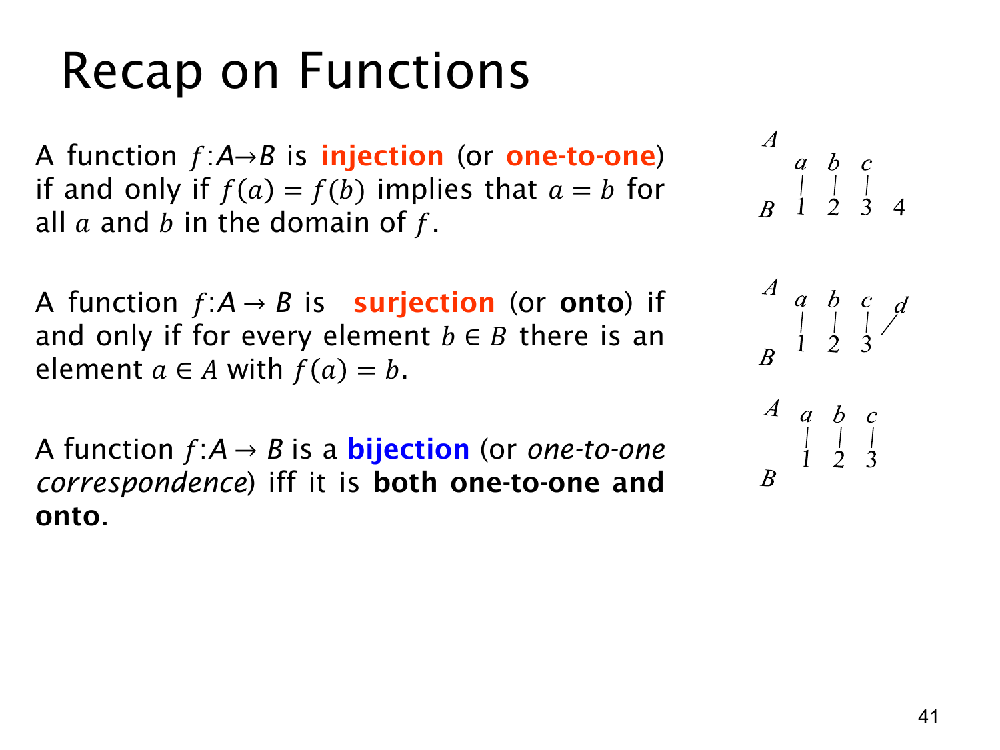

L1.4 · 第 41 页讲解原文
查看这一页课件

函数性质回顾：单射、满射、双射
本页是函数性质的总结，把三种判断放在一起比较。对函数 f:A→B：
- 单射（injection / one-to-one）：f(a)=f(b)⇒a=b，即不同输入不会得到同一输出。它检查有没有“撞值”。右上示意图里 a,b,c 分别指向 1,2,3，而 B 中的 4 没被指到；仍是单射。
- 满射（surjection / onto）：对每个 y∈B，至少有一个 x∈A 使 f(x)=y，即值域等于陪域。中间示意图有四个输入、三个目标，所有目标都被指到；其中某个目标由多个输入命中也允许。
- 双射（bijection / one-to-one correspondence）：既单射又满射。下方示意图的三个输入与三个目标一一配对，每个目标恰好由一个输入命中。
可以用两个问题快速检查：有没有两个不同输入撞在同一输出上？若有，则非单射。陪域里有没有元素完全没有原像？若有，则非满射。两种问题都回答“没有”，函数才是双射。
这些性质针对的是完整的函数声明 f:A→B。改变定义域或陪域，判定结果可能改变：例如整数平方在全体整数上不单射，把定义域限制为正实数后则可单射；把陪域取为正实数时，正实数平方还可满射。本页三个小图也说明：单射可有未用目标，满射可有多个输入共用目标，双射两者都不出现。